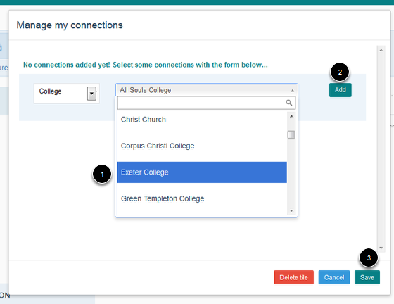
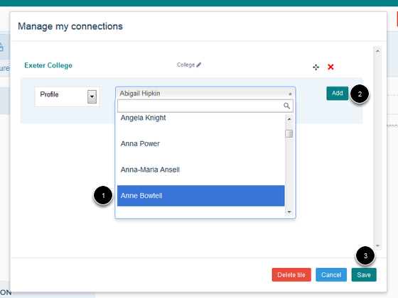

The Connections Tile enables you to provide links to Research Groups, Colleges, other profiles and external institutions that you might be affiliated to. Once you have added a Connections Tile the Research Groups that you are a member of will be added automatically (after adding the Connections Tile you may have to refresh the page before you see your Research Group connections).
Go to your profile and click on the Edit my profile button.
You will now see a set of icons at the top of your Profile. Click on Connections and keeping your mouse button pressed down drag the icon to the part of your page where you would like to add the Download tile (for example underneath your contact details or under your list of publications).
When you get to a section of your page where you can place the tile you will notice that the a pale coloured box appears. Letting go of your mouse button will place the Connections Tile in the place of the coloured box.
To add a College connection click on the drop down list and select College.
Select Profile from the drop down list to bring up a list of people who are in your department to bring up a list of everyone who has a profile in your department.
Select External connection from the drop down list.
Once you have finished adding connections click on the Save Layout button.